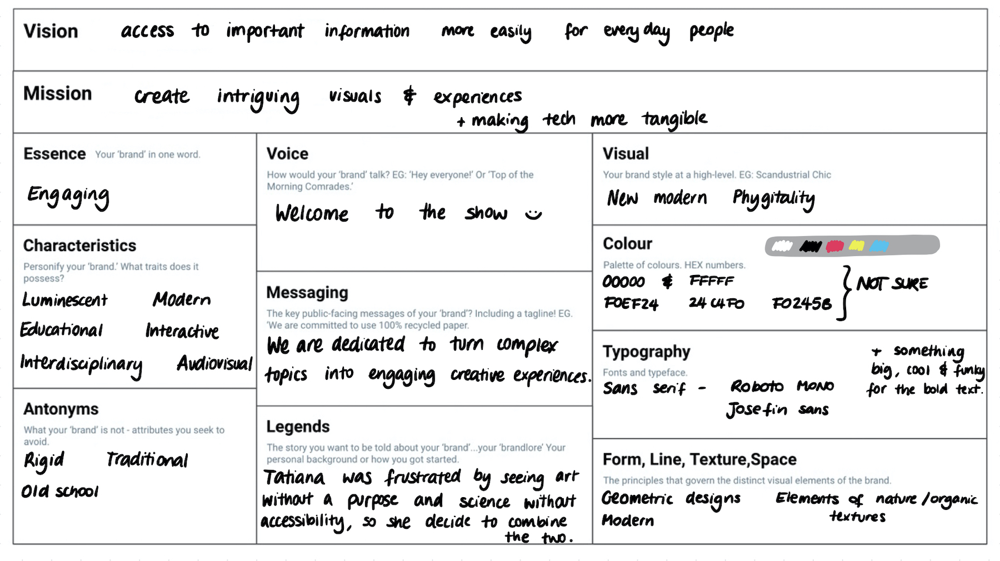
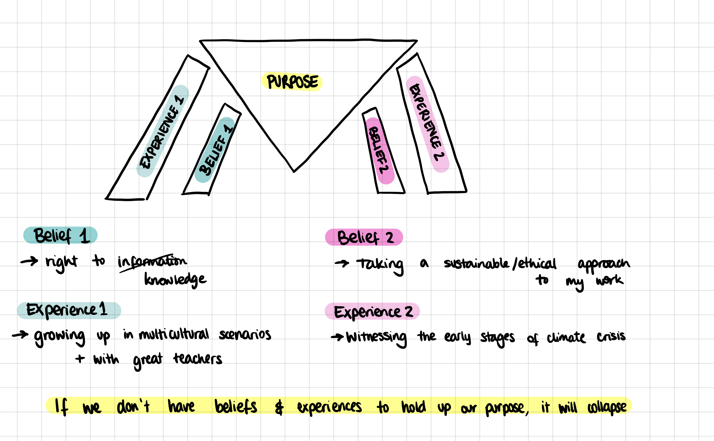
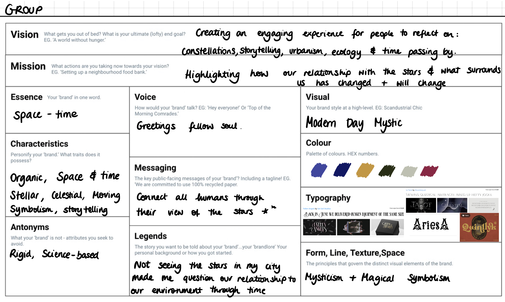
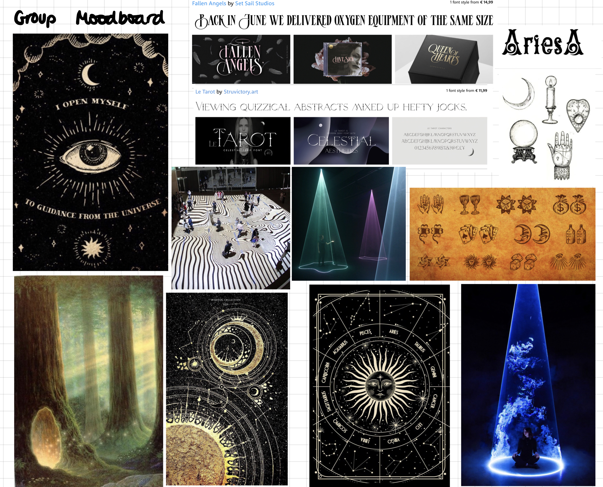
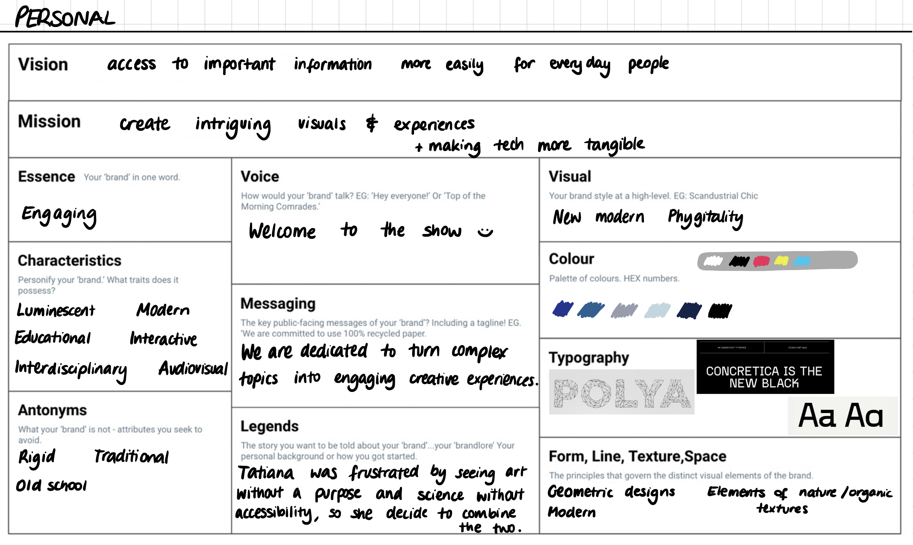
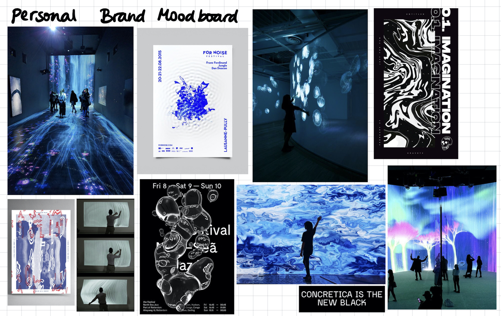

Communications, Brand & Purpose
A preliminary step to trying to define my "brand"
Initially, I was skeptical when trying to understand what my brand is, because it was strange for me to think about my own visions, projects and identity as a "brand". When I traditionally think about branding, I envision a company who is trying to set their marketing strategy and brand identity, not me, Tatiana, trying to define my purpose. I've done several branding activities in the past, and it was often from the perspective of a hypothetical business trying to place itself in the market against its competitors. It was also very much focused on the visuals and appearance of the brand, moreso than the ideologies they possessed (I suppose this is the typical Design school perspective, but I can tell that it is rapidly shifting to defining a strong purpose with the aim of social good).
Here is the exercise sheet that Kate asked us to fill in:

I eventually want to make it look pretty, with my own graphic choices, to present it in a way more reflective of the brand itself, but I still don't have access to my computer on which I can do these kinds of things. I have to replace some components that got damaged by the water.
Surprisingly, I really enjoyed this exercise. It really got me thinking in which direction I want to steer towards, which is something that I've been struggling to make clear. With so many hobbies and passions, I find it hard to understand what truly is my calling, but after I sat down and really gave it a good thought, I realised that I want to use my hybrid, interdisciplinary skills to my advantage. I've always had a conflict about whether I want to do something "for the greater good" or something that I liked. I have secretly been wanting to make audiovisuals for live shows and events but was worried that the activist in me would be disappointed.
With a passion for the environment, technology, arts, science and interaction design, I am slowly realising that I may be able to combine the greater good with the things I like. I know I want to talk about important topics such as the Climate Crisis, but it also needs to be more accessible and welcoming to people who may not have grasped those topics yet. I believe that a way to do so is through engaging visuals and Interactive Installations.
Despite my preconceived notion that "Branding is a way of selling you shit you don't need" I am realising it does not have to be that way. I enjoy branding and making visuals, and always thought that the only direction that would have brought me was the be a Junior Creative for some sort of Marketing Agency, endlessly making McDonald's commercials.
I may continue making variants of this diagram to explore other facets of my interests, and make a group one for our collective projects once I'm out of quaratine. Until then, I look forward to speaking to Kate during our review on Tuesday.

Here is the final iteration of the branding submission:



